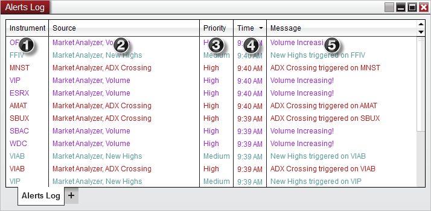
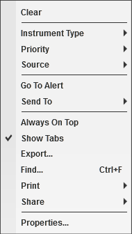

|
<< Click to Display Table of Contents >> Using the Alerts Log Window |


|
Using the Alerts Log Window
|
<< Click to Display Table of Contents >> Using the Alerts Log Window |
|
The Alerts Log window displays information for each alert that is triggered within NinjaTrader.
 Understanding the Alerts Log window
Understanding the Alerts Log window
Alerts Log Window DisplayWhen an alert is triggered, the following information is available in the Alerts Log window:
1.Instrument name 2.Source of alert 3.Priority of alert 4.Time of the alert 5.User defined message
 Right Click MenuRight mouse clicking within the Alerts Log window will bring up the following menu options:

|
Filtering AlertsBy default, all alerts triggered in the workspace will be displayed in the Alerts Log window. However, each Alerts Log window and tab has the capability to only display certain alerts based on a number of alert attributes.
The following alert filter attributes will be available from the Alerts Log right click menu:
To enable or disable these filters, simply right click on the Alerts Log window and check or uncheck the attribute you wish to configure.
When checked, only alerts which meet the alert attribute description will be displayed on the current Alerts Log window or tab. You can create multiple tabs, or multiple windows to setup varying filters for each attribute you desire to help organize the type of alerts that are displayed. |
 Using Alerts Logs and multiple workspaces
Using Alerts Logs and multiple workspaces
Finding an AlertFrom the Alerts Log, you can quickly locate the source window or tab in which the alert was generated.
1.Double clicking an alert entry row will bring the the source window or tab to front and focus. 2.You can also right click on the alert entry row and select Go To Alert.
Alerts Logs in Multiple WorkspacesThe default behavior of the Alerts Log is to only receive alerts from its parent workspace. However, you can configure an individual Alerts Log window or tab to receive alerts from other workspaces by right clicking on the Alert Log, selecting Properties and checking Receive alerts from all active workspaces (Please note that NinjaScript objects are excluded from this check).
With this configuration, should you attempt to Go To Alert which was generated from another workspace, you will receive a prompt asking if you would like to navigate to the source workspace. Selecting Yes on this prompt will then switch the active workspace and set the source window or tab into view. |